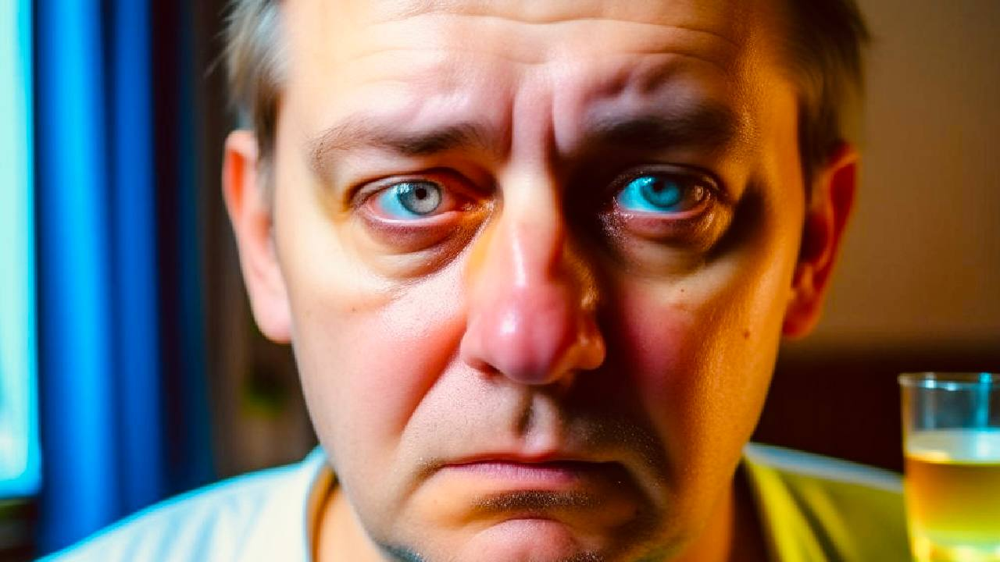

+38(068) 79 72 782
+38(068) 79 72 782Пивной алкоголизм - мы знаем решение
Пивной алкоголизм - большая проблема Харькова
Работаем в Одессе, Киеве, Львове, Харькове, Днепре, Запорожье, Черноморске


Бесплатная консультация, работаем круглосуточно 24/7
Пивной алкоголизм - большая проблема Харькова
Работаем в Одессе, Киеве, Львове, Харькове, Днепре, Запорожье, Черноморске
Пивной алкоголизм — это хроническое, прогрессирующее наркологическое заболевание, характеризующееся сильным патологическим влечением к пивным напиткам. Это состояние проявляется потерей контроля над объемом выпиваемого пива, который может достигать 10-12 литров в день. Зависимость выражается в ежедневном, постоянном употреблении пива, сопровождающемся потерей самокритики и полным отрицанием сформировавшейся алкогольной зависимости.
Пивной алкоголик — это человек, страдающий хроническим наркологическим заболеванием, при котором характерно постоянное употребление пива в больших количествах. Такие люди часто оправдывают свое пьянство стрессом или усталостью, убеждая окружающих, что это единственный способ расслабиться. При этом у них наблюдаются классические симптомы алкоголизма: отсутствие аппетита, отсутствие тошноты и рвоты (защитных рефлексов), нервозность, бессонница и непреодолимое желание опохмелиться.
Пивная зависимость является одним из вариантов классического алкоголизма. Ее специфика заключается в том, что ни сам пациент, ни его окружение не всегда осознают серьезность проблемы. Часто бытует мнение, что слабоалкогольный напиток не может нанести значительного вреда по сравнению с крепким спиртным. Однако постоянное употребление пива в больших количествах приводит к сильнейшей алкогольной зависимости и полной деградации личности, сопровождающейся развитием тяжелых хронических заболеваний.
Эффективное лечение пивного алкоголизма в Харькове включает 4 последовательных этапа:
Среди основных причин развития пивного алкоголизма выделяют наследственную предрасположенность, депрессию, неврозы и индивидуальную склонность к зависимостям. Относительно низкое содержание спирта в пиве часто приводит к тому, что на первых стадиях заболевания человек ведет относительно нормальную социальную и семейную жизнь, не испытывая проблем в коллективе. При этом толерантность к алкоголю растет, и объем выпиваемого пива может достигать 8-12 литров за вечер. Люди, страдающие пивным алкоголизмом, имеют те же симптомы, что и страдающие от других форм алкогольной зависимости, но из-за ложного представления о безвредности пива часто отрицают очевидность проблемы.
Пивной алкоголик проявляет те же симптомы, что и человек с любой другой формой алкогольной зависимости. Однако из-за высокого токсико-химического состава пива, есть и свои особенности:
Пивной алкоголизм в настоящее время не является самостоятельным диагнозом, а рассматривается как одна из форм алкогольной зависимости. Она характеризуется патологическим влечением к пиву и потерей количественного контроля. Пивной алкоголизм часто не воспринимается как серьезная наркологическая проблема из-за ложного убеждения о безвредности слабоалкогольных напитков. Однако высокая толерантность и большие дозы пива приводят к развитию тяжелых хронических заболеваний.
Пивной алкоголизм постепенно проходит через три основные стадии:
Капельница от пивной интоксикации или вывод из запоя — это наркологическая инфузионная процедура, направленная на снятие алкогольной интоксикации с помощью специализированных растворов. Цель — нормализовать работу всех органов и систем, купировать такие симптомы, как тремор рук, бессонница, тошнота и рвота, нервозность, психоэмоциональная лабильность и делирий. Вывод из пивного запоя в Харькове проводит квалифицированный врач-нарколог, имеющий опыт работы в реанимации и отделениях скорой помощи. Чтобы вызвать нарколога в Харькове или области, вам нужно позвонить по номеру: 050-021-69-57.
Капельница от пивной интоксикации обычно включает:
Состав капельницы от алкогольной интоксикации подбирается индивидуально. Этот список содержит лишь варианты препаратов, которые часто используются наркологами для купирования острых алкогольных интоксикаций. Не занимайтесь самолечением – это может быть опасно для вашего здоровья. Обратитесь к наркологу в Харькове по номеру: 050-021-69-57.
Последствия пивного алкоголизма, как у женщин, так и у мужчин, можно разделить на две группы:
Органические поражения всех органов и систем:
Социальные и психологические проблемы:
Помните, что пивной алкоголизм будет всегда прогрессировать. Обратитесь к врачу-наркологу в Харькове по номеру: 050-021-69-57.
Цена на лечение пивного алкоголизма в Харькове начинается от 1499 грн и может варьироваться в зависимости от стадии и тяжести состояния пациента.
| Все Услуги | UmbrellaPlus | Харьков | Цена |
|---|---|
| Лечение алкоголизма Харьков | От 1699 грн |
| Капельница от алкоголя Харьков | От 1699 грн |
| Капельница от алкоголя на дому Харьков | От 1999 грн |
| Вывод из запоя Харьков | От 1699 грн |
| Вывод из запоя на дому Харьков | От 1999 грн |
| Лечение пивного алкоголизма Харьков | От 1699 грн |
| Лечение женского алкоголизм Харьков | От 1699 грн |
| Кодирование от алкоголизма Харьков | От 3999 грн |
| Кодирование от алкоголизма укол Дисульфирам | От 3999 грн |
| Кодирование от алкоголизма укол Эспераль | От 5999 грн |
| Подшивка от алкоголя Харьков | От 9999 грн |
Кодирование от алкоголизма является эффективным методом в лечении пивного алкоголизма. Оно позволяет пациенту полностью отказаться от употребления спиртных напитков путем воздействия на физический и психоэмоциональный аспекты зависимости. На время действия кодирования у пациента уменьшается патологическое влечение к пиву, меняются ложные убеждения в пользу трезвости, а также формируется стойкое отвращение к любым спиртным напиткам. Следует помнить, что кодирование от алкоголизма является неотъемлемым этапом в лечении зависимости, с помощью которого удается ввести пациента в длительную трезвость.
На сегодняшний день в Харькове существует 3 основных метода кодирования от пивного алкоголизма:
Каждый метод лечения алкоголизма эффективен и имеет свои плюсы и минусы, которые обсуждаются с врачом.
Чтобы вылечить пивного алкоголика, необходимо пройти комбинированное, квалифицированное наркологическое лечение. Оно обязательно включает детоксикационную и психологическую помощь. Суть этого лечения заключается в снятии хронической пивной интоксикации и психологической работе с ложными, зависимыми убеждениями. Важно полностью изменить образ жизни, найти мотивацию в пользу трезвости и полностью отказаться от любого употребления спиртного. Чтобы вылечить пивного алкоголика в Харькове, вам нужно обратиться к врачу-наркологу, позвонив по номеру: 050-021-69-57.
Анонимно

"Никакими усилиями самостоятельно я не смогла преодолеть запой, и наступала ломка, сопровождаемая повышенным давлением и пульсом. Тогда я решила обратиться за помощью в клинику. Врачи оказали мне неоценимую поддержку! Уже прошел месяц, и я не только не употребляю алкоголь, но даже не испытываю к нему желания!"
Анонимно
"Могу с уверенностью порекомендовать данный центр для тех, кто ищет помощь при выводе из запоя. Я неоднократно обращался к ним и могу сказать, что цена соответствует качеству услуг. После проведения капельницы в клинике, вся тяга к алкоголю проходит, и я чувствую себя гораздо лучше. Это действительно эффективный метод, и я благодарен клинике за их профессионализм и заботу!"
Анонимно
"Я очень благодарен за то, что вы помогли мне разобраться с моей проблемой алкоголизма и найти ее решение. Давно осознавал, что без помощи профессионалов я не справлюсь, и я не ошибся, выбрав ваш центр Амбрелла. Здесь действительно предоставляется профессиональная помощь, которая оказалась для меня реальным спасением. Огромное спасибо за вашу поддержку и заботу!"
Анонимно
"Неоднократно я пытался бросить алкоголь самостоятельно, но каждый раз уговаривал себя продолжать. Я сначала ограничивался одной бутылкой в день, потом двумя, и в итоге вновь попадал в запой. Но в итоге, я смог прекратить употребление алкоголя только после того, как обратился в центр Амбрелла и заказал у них услугу вывода из запоя. Уже не пью 3 месяца и удалось полностью восстановиться. Благодарю врача который меня вел - Алексея Валерьевича"
Анонимно
"Здравствуйте! Я хотел бы выразить свою искреннюю благодарность клинике за быстрое и профессиональное освобождение моего мужа пивного рабства! Ранее у меня уже не было никаких надежд на его выздоровление. Однако, благодаря вашим перспективным методам лечения, мы теперь идем к полному отказу от алкоголя. Вы дали нам новую надежду и оказали неоценимую помощь! Спасибо вам за все!"
Анонимно
"Я долгое время страдал от запоев и не мог справиться с этой проблемой. Однако, когда я обратился в этот центр, они быстро помогли мне вернуться на ноги, и самое главное - предоставили мне возможность не возвращаться к запоям. Уже почти полгода я не испытываю запоев! Это для меня настоящее чудо, я никогда не думал, что смогу так преодолеть свои проблемы. Большое спасибо центру Амбрелла!"
Анонимно
"Благодарю ваш центр Амбрелла за оперативное и высококачественное лечение! Женский алкоголизм - это настоящее горе, с которым невозможно справиться в одиночку. Я уже потеряла надежду, но благодаря вашей помощи, она вернулась ко мне! Отдельная благодарность врачу Станиславу Вячеславовичу, а также благодарность Богу за то, что он послал мне такое чудо как ваша центр! Спасибо вам всем!"
Анонимно
"Хочу выразить благодарность врачу Владиславу Алексеевичу за то, что вы избавили меня от этого ужаса. Я уже был в отчаянии, перепробовал множество клиник и центров, но только здесь я наконец получил настоящую помощь! Алкоголь полностью разрушил меня, и если бы не ваша помощь, я, возможно, уже не был бы жив. С вами я смог вернуть себе жизнь и буду благодарен вам всегда!"
Номер телефона:
+380 (97) 369 76 65
+380 (50) 021 69 57
Адрес главного офиса: г. Харьков ул. Сумская 47
Офис вашего города нужно
уточнить
Работаем в: Одессе, Киеве, Львове, Харькове, Днепре,
Запорожье
Telegram: t.me/umbrellaplus
График работы: Круглосуточно